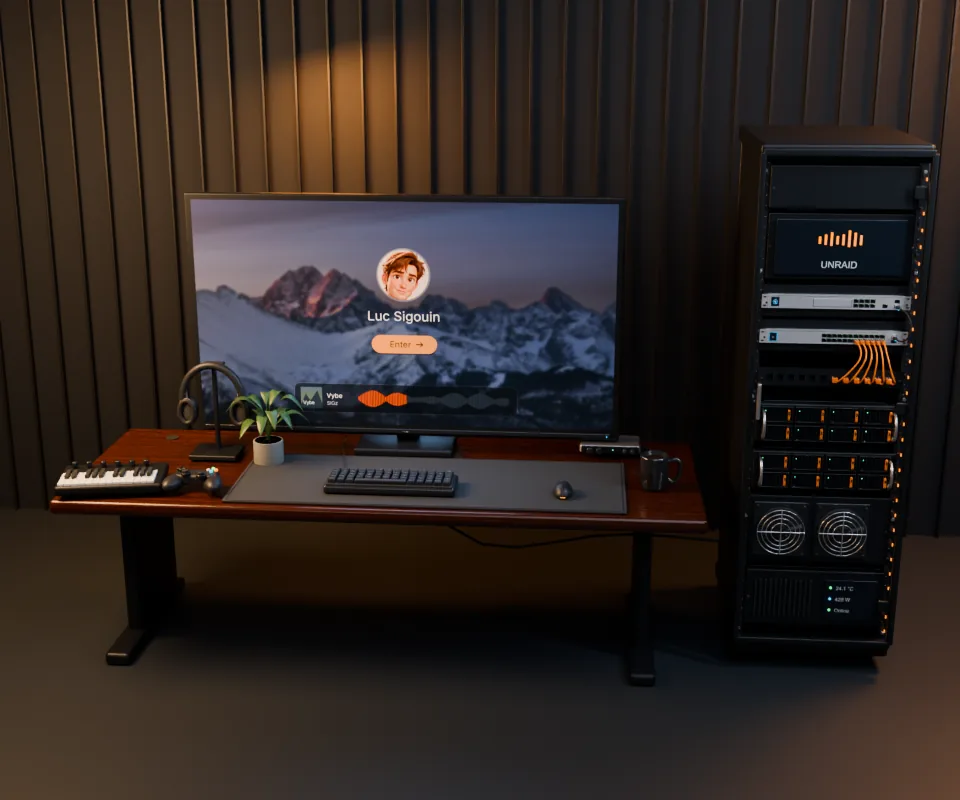
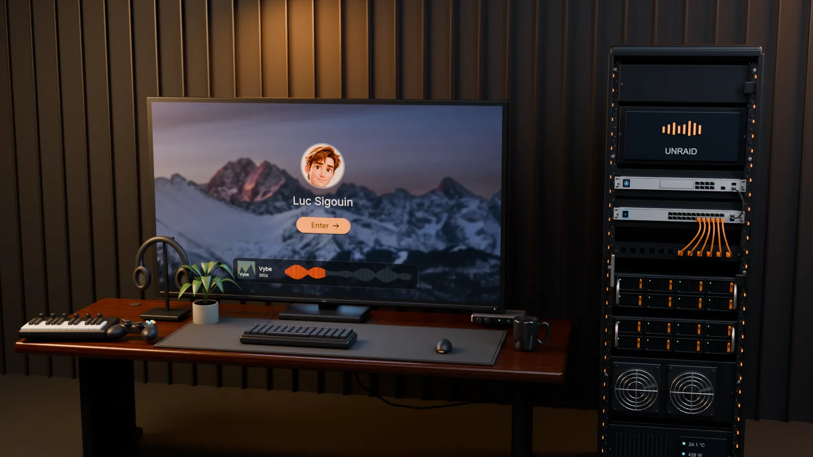

Center crop of the square still

- Rack and the left side of the monitor are cut off
- Tapping Enter doesn't go in. It starts a 13 MB 3D download
3D view, sized for a wide screen

- Room shrinks to a strip, black above and below
- Enter is about 26 px wide, too small for a thumb
Rack is the whole screen

Hub loads →
- Big glowing Enter, 60% of the screen wide, with "Tap to enter the hub" under it
- Soft pulse ring draws the eye. The whole monitor is the button
- Tap the rack below to open the door
- Tablets and desktop keep the desk view